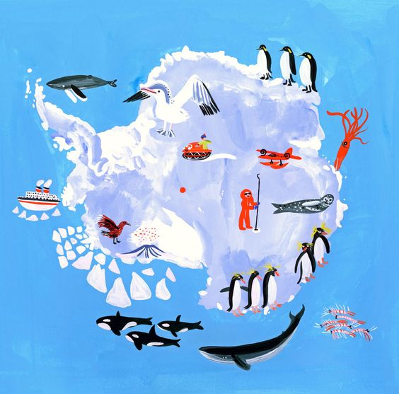
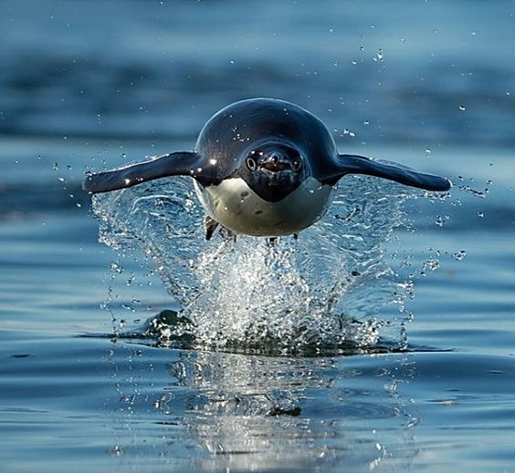
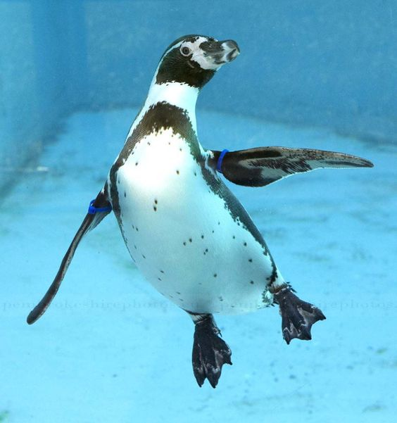

Los pingüinos son aves marinas, no voladoras, que habitan exclusivamente en el hemisferio sur del planeta. Pertenecen a la familia Spheniscidae, la única del orden Sphenisciformes, y se caracterizan por haber adaptado sus alas para la natación y la captura de alimento bajo el agua, en lugar de volar. Estas aves evolucionaron a partir de un ancestro volador hace entre 10 y 40 millones de años, y el registro fósil más antiguo data de unos 55 millones de años. Actualmente se conocen alrededor de 18 especies vivas, agrupadas en seis géneros distintos.


